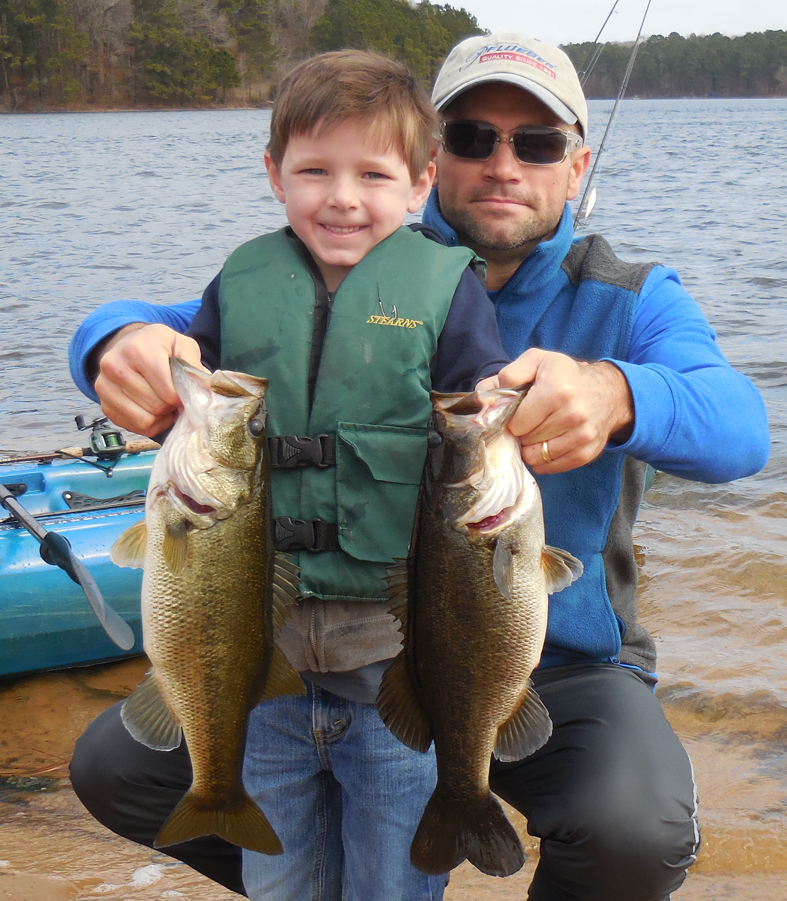

About Me
 I have a varied professional experience, including fisheries biology, operations management, information systems, software release management, testing, support, deployment of SaaS platforms, and software product management. In each role I gained experience, perspective, and skills that equipped me for the next. After 15+ years of wearing various information technology hats, I realized full-stack web development was the next right step. Two months into my training as a full-stack web developer, it became obvious this was the right move. Although presently junior in my coding skills, I bring a boatload of valuable experience and perspective to the local dev environment. Imagine a software engineer who's been a stakeholder at virtually every level of software applications - business analyst, customer liason and representative, launch specialist, user trainer, end user, tester, scrum master, product owner, and project manager. That's me.
When I'm not learning, working, or coding a side project you can find me with my family, fishing, kayaking, baseballing, working out, cooking out, and fixing whatever breaks in our home. I enjoy working with kids of all ages, especially my own. I love my wife (Lynne) of 20+ years, and we're more than proud of our sons and daughter. Our daughter is a great writer, artist, and creative free-spirit. Our older son inherited my passion for fishing, while our younger son is enjoying learning how to write code. I graduated from Texas Tech University in 1999, spent a few years in the panhandle, 7 years in Alabama, a year in Houston, and arrived in the Dallas area in 2010.
I'm honest to a flaw as you'll soon read... I enjoy learning new technologies but consider myself below-average in terms of learning new concepts. My work ethic is strong and eventually helps me find my legs learning new material. I prefer to understand what I'm coding rather than pasting a snippet that I don't. My professional strengths include software requirements, usability enhancements, debugging, process, and building customer rapport. Give me a toolbox, I'll dump it out, take a quick inventory, and get the job done as best I can.